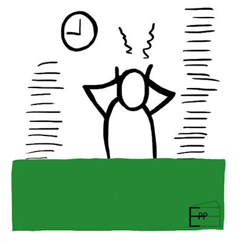
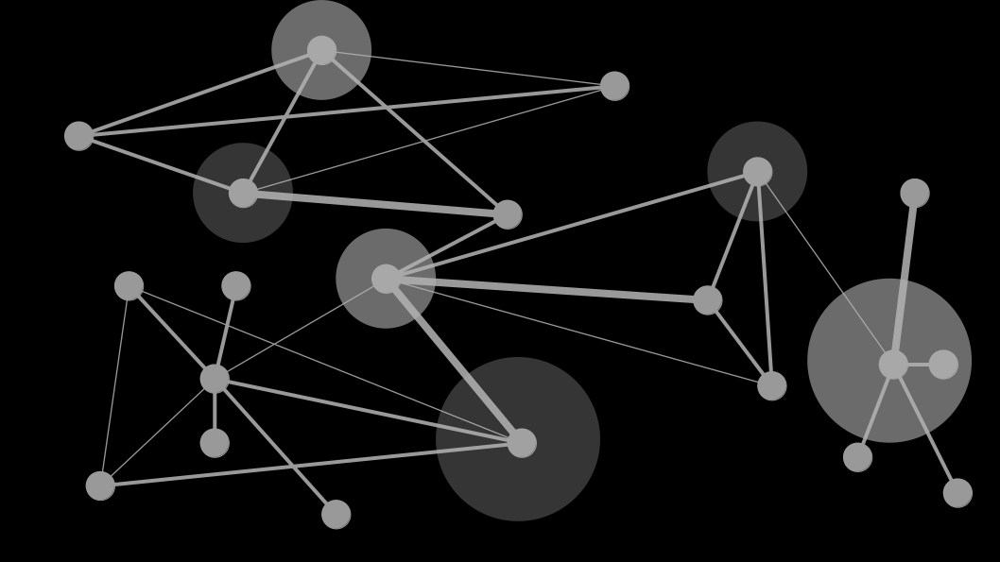
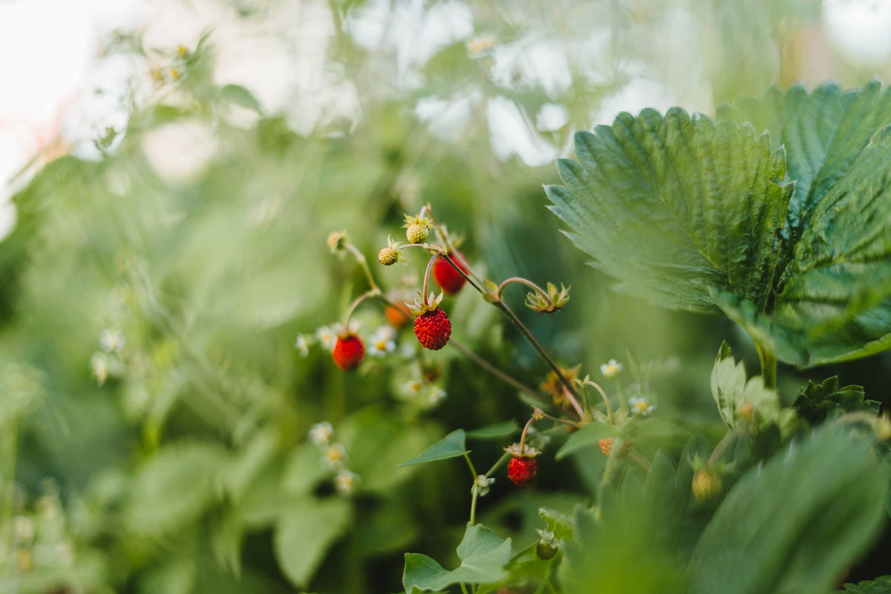
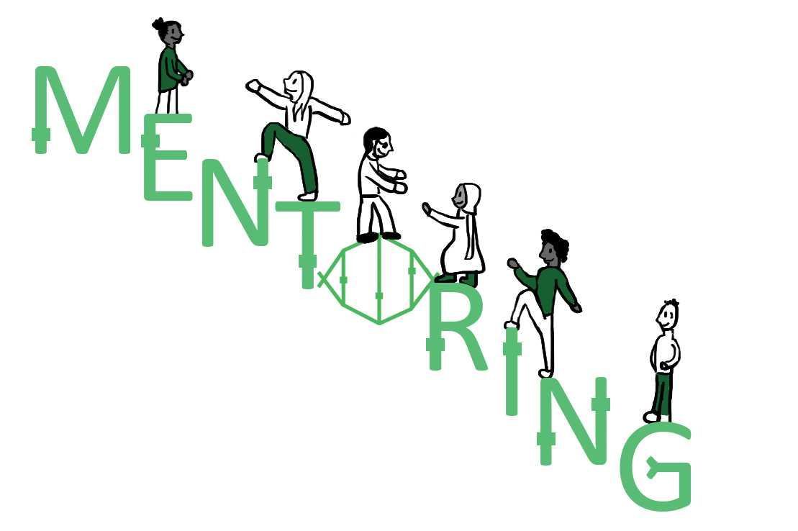
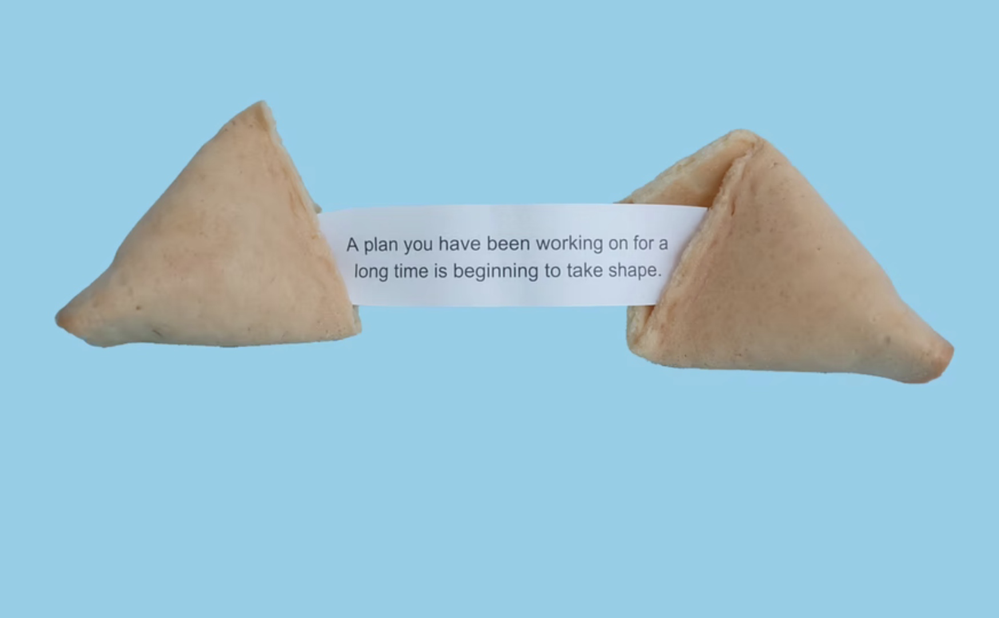

We are inviting members of the open research community to participate in two curriculum consultation workshops to shape the Seeds to Systems training programme.

We are thrilled to announce that the pilot cohort of Seeds to Systems will run September to November 2026.

- Kari L. Jordan, Erin Becker, Daniela Saderi, Patricia, Noam Ross, Leah Wasser, Yo
UPDATE 2026-06-05: The Facilitation RFP has had an error corrected: Now the duration is 3 months, not 18 months as previously stated.

In this second post of the Seeds to Systems series, we explore how systems thinking can help us better understand the complexity of research funding landscapes and the different factors that shape sustainability for open science projects and communities.

With funding from CZI, OLS launched the Seeds to Systems initiative in 2025 to support individuals and teams transitioning their open source or open science projects to the next stage. One of our core activities is the development of a research-based curriculum and training programme for established research initiatives, communities of practice, and volunteer-run research organisations.

OLS is seeking a web developer and accessibility expert to support improvements to our website and documentation. We recognize that this work involves two distinct areas of expertise, and applicants may apply for one or both:

We are introducing our new Nebula Resident Fellow, Gracielle Higino! Gracielle joined us in February to support the coordination and delivery of our 2026 NASA-Nebula Open Science training cohorts.
After a period of onboarding, Gracielle is already killing it and doing a great job with all the cohort-related tasks, and also cheering Sara weekly!
We are kicking off a brand new OLS blog series, in which we will spotlight our team members, their work and interests in a fun and easy way! Today, we’ll start with Laura Carter, our new Fiscally Sponsored Community (FSC) Manager, who joined the team in late 2025.

OLS had a directors retreat in France in 2024. It ended up being a great time for Bérénice, Malvika, and Yo to reflect on something that started as a fun idea in 2019, and took off beyond where we could have dreamed.

At OLS we love working with other communities, so when the opportunity to run a workshop for the eLife Community Ambassadors program came up, we didn’t hesitate to jump into the collaboration. In this post, we share what the workshop was about and how it aligns with our Seeds to Systems strategy.

- Laurah
This year marked my third Deep Learning Indaba. When I sent in my application to attend, I remember being anxious, wondering if I would be selected. I felt that way because my first application back in 2023 felt more like a try-out. I didn’t even expect to be selected, but I was, and I even ended up presenting a poster based on part of my master’s research, where I used AlphaFold to predict drug targets. The second time, in 2024, I was part of the organising committee in the programs department, so I didn’t have to submit an application at all. But this year I had to apply again, this time as an attendee without work to present, just with the intention of networking, enjoying the event, and being a sponge; to soak in knowledge. For the past two years, the Deep Learning Indaba has been happening in West Africa; in Ghana in 2023, then in Senegal in 2024. So when it was announced that in 2025 it would be hosted in Kigali, Rwanda, in East Africa, I was stoked. Even though I’d never been to Kigali before, it already felt close to home: just a short flight (or even a bus ride) away.

TL;DR: You’re invited to share your thoughts about what is important in research ethics on this GitHub discussion, or via Slack in #general by end of January.

- Kari L. Jordan, Erin Becker, Daniela Saderi, Vanessa Fairhurst, Patricia, Noam Ross, Yanina Bellini Saibene, Leah Wasser, Yo
Open science has transformed how research is conducted, shared, and reused. Yet the organisations at the heart of this transformation are often left vulnerable, underfunded, and disconnected from one another. To move from simply surviving to truly thriving, five leading open science organisations – The Carpentries, OLS, rOpenSci, pyOpenSci, and PREreview – are convening to chart a collective path forward. We are so grateful to The Navigation Fund for supporting this work, and invite our communities to review the full proposal online.

Job title: Fiscally Sponsored Community (FSC) Manager

- Bethan
When I signed up for the Open Science Retreat, I was fairly nervous. The unconference model was new to me… plus, I’m definitely the type of person who prefers structure and pre-planning! The schedule left me with more questions than expectations: What would I be doing? Would I fit in? Would they force me to go hiking?!


OLS is thrilled to announce the ‘Seeds to Systems’ initiative made possible by generous funding from the Open Science Program of Chan Zuckerberg Initiative (CZI). This funding will build up OLS’s capacity to support individuals and teams in biomedical and related research fields who are ready to transition their open source/science projects to the next stage.


- Deborah
Attendees: Yo Yehudi, Malvika Sharan, Patricia Herterich, Bethan Iley, Irene Ramos, Sara Villa, Deborah Udoh, and Tajuddeen Gwadabe (virtually!)

Since being elected in June 2023, the OLS Governance Committee, has been quietly but actively working behind the scenes—providing oversight, supporting leadership decisions, and helping to steer OLS toward a stronger future.

- Doaa
Mentee! Yes, this is how it started 2 years ago as a mentee in OLS 7. It was the first time I felt this wasn’t just another course about leadership or developing a project (I ended up building Open Science Community Egypt!), but a real community where you do have people watching your back.
UPDATE 2025-05-19: Application period extension

- Malvika
Seeking Feedback from Our Community Members on Proposed Organisational Values: Your Perspective Matters!


- Deborah
Day 1: Waving Through a Window
Attending FOSS Backstage online was a contrast to my past virtual conference experiences, especially compared to the highly engaging Collaborations Workshop. There was no opportunity to ask speakers questions directly, no intentional networking efforts, and little to differentiate attending live from simply waiting for the recordings to be released. While the platform itself was user-friendly and easy to navigate, the nature of the talks further contributed to my sense of disconnection. Legal & Compliance, Economics, Governance - these topics, while critical to open source, are not my usual focus. As a result, much of the content went over my head. To make matters worse, scheduling conflicts meant I missed some talks I had been looking forward to.

This speedblog, written by Sebastian D’Amario, is part of the OLS-9 cohort.

- Deborah
Let me start by saying that this trip almost didn’t happen. A visa application I started in early November was still unresolved a day before FOSDEM. Without my passport, I had to cancel my flight. But with just a few hours to go, something changed.

This speedblog, written by Mark Louie Lopez, is part of the OLS-9 cohort.

As a NASA grantee, OLS has been running the 6-week Nebula training program since early 2024. With the new USA government, we have been asked to pause our open science 101 training for the next few months, while the curriculum is reviewed. We’ll let you all know when the training is available again.

- Moses
This speedblog is part of the OLS-9 cohort, where participants explore open science principles while developing their projects. In this post, Melleason shares insights from their work on integrating indigenous knowledge with scientific methods to improve caribou habitat conservation on the Slate Islands.

¡Nos entusiasma darle la bienvenida a Sara Villa, quien se une al equipo de OLS como Senior Fellow!

- Deborah
Public speaking has been one of my strongest skills for the longest time — but like other skills, one can never truly master it, only strive to refine it. I had the privilege of working with David Kershaw, a remarkable public speaking coach provided by the Society of Research Software Engineering (SocRSE), to prepare for my Emerging Voices plenary at RSECon24.

- Deborah, Nneoma, Seun, Tajuddeen
There’s something magical about meeting people you’ve worked with virtually for ages and instantly feeling like family when you finally see each other in real life. That’s exactly how it felt when the OLS Nigeria Team met up for the first time this past Tuesday, December 17, 2024, at the vibrant Art Tech District in Abuja.

We are beyond excited to the launch of the Open Science Promotion and Advocacy for Research Knowledge (OSPARK) project, a groundbreaking collaboration between Open Life Science (OLS) and The Digital Research Academy (DRA)!

We are thrilled to announce that Doaa Mohamed Abdelkader has joined the OLS team as our newest Resident Fellow!

The Catalyst Project is a community-engaged initiative designed to support the adoption of open science principles in under-served bioscientific research communities through the provision of reliable and sustainable cloud computing infrastructure. It’s a project we’ve been working on now for almost two years, which involves staff from seven different organizations: 2i2c, The Carpentries, CCAD, CSCCE, IOI, MetaDocencia, and OLS, and is funded by the Chan Zuckerberg Initiative.

- Seun
The Open Science for Bioinformaticians workshop, held on August 15-16, 2024, successfully introduced young professionals in Nigeria to the principles of open science and their applications in bioinformatics. This two-day virtual event was designed to empower participants with practical skills for data management, ethical data sharing, and collaborative research using open science practices.

This blog is written in Nigerian Pidgin, and is also available in English.
This blog is written in English, and is also available in Nigerian Pidgin.

Emmy Tsang joined the OLS Board of Directors in 2021. In March 2024, she concluded her service and stepped down from the board. With this post (although 3 months delayed), we recognise and celebrate Emmy’s hard work in OLS during her time as a Director of Finance and Operations.

We are delighted to announce that we have partnered with the Digital Research Alliance of Canada (the Alliance) and the Catalyst Project to deliver two tracks as part of OLS’s Open Seeds program, OLS-9.

We’re excited to share that RSE-AUNZ are joining OLS as our first Fiscally Sponsored Community (FSC)! We’ll be exploring this over the next year with RSE-AUNZ as they run their flagship 2024 RSE Asia Australia unconference.

At OLS, we are thrilled to share a significant milestone: the establishment of the OLS Governance Committee. In this post, we highlight their work with us over the past six months.

This blog post was originally shared by Software Sustainability Institute, and can be found here, as authored by R. Camacho Toro, Y. Briceño and A. Martínez.

- Bérénice, Malvika, Yo, Emmy, Paz
We are excited to kick-off the new round of Open Seeds with another incredible cohort of mentors, mentees, and experts. We are honored to bring together members of diverse identities and backgrounds who represent expertise from different domains of research, who are working to address a wide range of relevant questions in their field and are motivated to bring a culture change in their areas. Many of them are long-standing Open Scientists who aim to use this opportunity to apply open science and community-based principles in their projects through this program.

- Patricia
In October 2022, I was one of the lucky people invited to explore a Resident Fellowship with OLS. In the announcement blog, I claimed that I wanted to achieve the following with my Fellowship:

This is a double announcement of two exciting (and linked) items:


This post summarizes our OLS journey, the project we worked on during the entire period of cohort 7, and what our plans for the future are

- Patricia, Gemma, Saranjeet Kaur, Aman
From 2 to 4 May 2023, our sponsors and friends at the Software Sustainability Institute hosted their annual flagship event, Collaborations Workshop. CollabW23 is a special event and truly collaborative with many interactive sessions. This year, it was run as a hybrid format and it was great to see the effort of bringing people together in person and remotely.

- Richard
“✨Joining OLS mentorship is not just about learning and growing; it’s about being part of a supportive community that empowers you to reach your full potential.✨” Richard Dushime

Open Seeds participants of OLS-7 are graduating this week! Read on to find out how you can attend Open Seeds OLS-7 graduation calls to celebrate and learn more about their work, and how you can join as a participant in the next cohort, Open Seeds OLS-8.

- Paz
We have launched Open Seeds OLS-8 Cohort, our signature open science mentoring and training program.

We’re delighted to share that OLS has two new staff members: Tajuddeen, who has joined OLS as the coordinator for our collaborative ECB grant, and Debs, who has joined the OLS team as a junior web developer. Between Tajuddeen, Debs, and Jilaga (OLS’s Outreachy intern for re-branding), Nigerians are now the most highly-represented nationality in the OLS team!

- Yo
For many, 2023 is the Year of Open Science. OLS and MetaDocencia (MD) are delighted to announce that we will be participating in the Year of Open Science by delivering Open Science training for NASA, using materials originally developed by a huge group of open researchers worldwide, alongside American Geophysical Union (AGU).

- Nneoma
Exciting news! We wrapped up our rebranding excercise by refreshing our logo and introducing a new name for our mentoring program; Open Seeds! The new logo reaffirms our core values Growth, Community and Nurture, with a cohesive colour palette. We’re excited to launch our refreshed brand identity and continue our commitment to advancing open research and scholarship.

- Bérénice, Malvika, Yo, Emmy, Paz
We are excited to kick-off the new round of Open Life Science with another incredible cohort of mentors, mentees, and experts. We are honored to bring together members of diverse identities and backgrounds who represent expertise from different domains of research, who are working to address a wide range of relevant questions in their field and are motivated to bring a culture change in their areas. Many of them are long-standing Open Scientists who aim to use this opportunity to apply open science and community-based principles in their projects through this program.

- Nneoma
OLS is undergoing a rebranding project to make it more inclusive and accessible to researchers from various fields of study. The project is led by a design intern from Outreachy, who brings a fresh outlook to the process. So far, we have conducted research and documentation to understand OLS’s ideal targets and collaborators, and the current brand positioning. The biggest challenge faced is generating a new brand name. OLS is reaching out to its community for support and to vote for their preferred brand name choice from a shortlisted two.

We are excited to announce that the team and proposal described in this blog post has been awarded funding by the Chan Zuckerberg Initiative!

Open Life Science (OLS, https://we-are-ols.org/) is hiring a Programme Manager to coordinate and manage a global, multilateral grant-funded project with the aims to (1) deploy and manage open cloud infrastructure for under-resourced communities in Latin America and Africa, (2) create training and build capacity within these communities, and (3) identify a participatory service model for this infrastructure.

Complementing our Resident Fellows and the Software Sustainability Institute’s International Fellowship pilot, we’re happy to announce that the SSI has agreed to support three additional international Fellows that will be hosted by Open Life Science.

In September 2022, OLS had a leadership retreat in Scotland, where all four directors gathered together to discuss future plans and strategic director for our organisation. One of the key activities we identified was a desire to work with community members in a more official capacity, beyond the mentorship program that is our core. As a young organisation with funding, we have a relatively high level of flexibility when it comes to defining our mission and how we deliver it.
OLS-6 is approaching the penultimate week of their OLS journeys! Read on to find out how you can participate in their graduation to celebrate and learn more about their work, and how you can be part of the next cohort.

- Bérénice, Malvika, Yo, Emmy, Paz
We are excited to kick-off the 6th round of Open Life Science with another incredible cohort of mentors, mentees, and experts. We are honored to bring together members of diverse identities and backgrounds who represent expertise from different domains of research, who are working to address a wide range of relevant questions in their field and are motivated to bring a culture change in their areas. Many of them are long-standing Open Scientists who aim to use this opportunity to apply open science and community-based principles in their projects through this program.

- Bérénice, Emmy, Malvika, Paz, Yo
Back in January 2022, we shared that we were looking for a Community Researcher and Programme Coordinator to join our team, thanks to support from the Wellcome Open Research Fund.
- Bérénice, Emmy, Malvika, Paz, Yo
En enero de 2022, compartimos que buscábamos un/a investigadora comunitaria y coordinadora de programas para unirse a nuestro equipo, gracias al apoyo del Fondo de Investigación Abierta Wellcome.

TU Delft OPEN Publishing, the Open Access academic publisher of TU Delft, publishes Open Access (OA) journals and open textbooks and open books. It is a part of the open science programme of TU Delft that consists of seven interrelated projects: Open Education, Open Access, Open Publishing Platform, FAIR Data, FAIR Software, Open Hardware and Citizen Science.

- Ismael
How can we foster a responsible research ecosystem?
The Delft University of Technology (TU Delft) in the Netherlands runs once a year a Massive Online Open Course (MOOC) on Open Science on the edX platform: Open Science: Share your research with the world.

OLS-5, aka Cohort Hope, is approaching the penultimate week of their OLS journeys! Read on to find out how you can participate in their graduation to celebrate and learn more about their work, and how you can be part of the next cohort.

- Esther
This post is guest-authored by Esther Plomp, OLS-3 and 4 mentor.

- Nadine
Project background
My main motivator to initiate this project was to be able to do research on formal measures of emergence & complexity that

We are excited to kick-off the fifth round of Open Life Science with another incredible cohort of mentors, mentees, and experts. We are honored to bring together members of diverse identities and backgrounds who represent expertise from different domains of research, who are working to address a wide range of relevant questions in their field and are motivated to bring a culture change in their areas. Many of them are long-standing Open Scientists who aim to use this opportunity to apply open science and community-based principles in their projects through this program.
OLS is hiring a Community Researcher and Programme Coordinator.

OLS is absolutely delighted to share the news that as of January 2022, the Chan Zuckerberg Initiative has awarded OLS a total of USD 574,945.30 over the next two years. This grant will provide OLS with a truly valuable opportunity to improve sustainability for the organisation and community, and allow enough time to focus on planning for the longer term.

- Esther
This post is guest-authored by Esther Plomp, OLS-3 and 4 mentor.

We are delighted to share that Wellcome Trust has awarded the Open Research Fund to Open Life Science (OLS). This will enable research and sustainability of the program for the next two years. Under the title Systematic evaluation of community development through open science training and incentivising contextual mentorship in health research, OLS has received GBP 99,999 to create a funded position for a programme coordinator and researcher, as well as pay for the overhead cost for the next four cohorts.

We recently opened the call for application for individuals and groups to join Open Life Science’s fifth cohort, OLS-5, starting in February 2022. The applications can be submitted until January 15, 2022 (midnight in any part of the world) on Open Review (application guidelines and templates).

OLS-4 is approaching its last cohort call, which means that we are preparing for the graduation of our current cohort and setting things up for the OLS-5 in 2022.

We are excited to kick-off the fourth round of Open Life Science with another incredible cohort of mentors, mentees, and experts. We are honored to bring together members of diverse identities and backgrounds who represent expertise from different domains of research, who are working to address a wide range of relevant questions in their field and are motivated to bring a culture change in their areas. Many of them are long-standing Open Scientists who aim to use this opportunity to apply open science and community-based principles in their projects through this program.

This post is guest authored by Afzal Ansari and Abdulelah Al Mesfer, two recent graduates of OLS-3.

We’re super excited to be launching the fourth cohort of Open Life Science, our open research training and mentorship programme!

This post is guest authored by Katharina Kloppenborg, a recent graduate of OLS-3.

This post is guest authored by Eva C. Herbst and Dylan Bastiaans, OLS-2 graduates. See the OLS issue with project journey

We are excited to kick-off the third round of Open Life Science with another incredible cohort of mentors, mentees, and experts. We are honored to bring together members of diverse identities and backgrounds who represent expertise from different domains of research, who are working to address a wide range of relevant questions in their field and are motivated to bring a culture change in their areas. Many of them are long-standing Open Scientists who aim to use this opportunity to apply open science and community-based principles in their projects through this program.

- Emma
This post is guest authored by Emma Karoune, a recent graduate of OLS-2.

- Yo
Since the beginning of OLS-2, we’ve been using Otter.ai to provide realtime closed captioning of our cohort calls to make them more inclusive of our participants. In the process of developing a more accessible format for OLS’s calls, we came across a surprising number of nuances to the different services and options one can choose from. With the help of Kaitlin Stack-Whitney and Malvika Sharan, I put together a preprint with some guidance based on what we learned, including how to handle Zoom break-out rooms that (currently) don’t get captioned at all.

It’s hard to believe, but OLS-2 is in its final stage right now, which means that OLS-3 is just around the corner in 2021.

Open Life Science has recently been awarded three grants - one from the EOSC-Life Training project and two more small grants, which will partially support the OLS-3 and OLS-4 cohorts (more information will follow soon).

An important part of collaborative research, and indeed of open science, is compassion. We’re too-often inclined, as a community, to act as though science - that it is supposed to be evidence-based or data-driven - is somehow pure, objective, and above bias. In reality, science is produced by humans, and falls prey to the same implicit biases that humans have. This is reflected in the science and research we do, and in the communities of scientists and researchers who create the science.

This is the last part of the 3 parts OLS project and community report: Where we want to go. In the first two parts, we covered: Where we are and How far we have come.

This is the second part of the 3 parts OLS project and community report: How far we have come. The first part covered: Where we are and the last part will be Where we want to go.

Around June 2019, OLS was originally dreamed up. Mozilla had launched a call for applications to Open Leaders X, the program that incubated OLS and several other related open leadership initiatives. In July 2019, we submitted a collaboratively prepared application written at the BOSC 2019 CoFest (see the draft), and in September we were delighted to learn we had been accepted to create our program as a part of Open Leaders X. Slightly more than a year has now passed, and we would like to share the first annual OLS project and community report with you.

We are excited to kick-off the second round of Open Life Science with another incredible cohort of mentors, mentees, and experts. We are honored to bring together members of diverse identities and backgrounds who represent expertise from different domains of research, who are working to address a wide range of relevant questions in their field and are motivated to bring a culture change in their areas. Many of them are long-standing Open Scientists who aim to use this opportunity to apply open science and community-based principles in their projects through this program.


It’s been a long and exciting journey, from applications opening in October 2019, announcing selected applicants in early January, and kicking off the program’s first cohort call on the 29th of January. Since then we’ve had an amazing range of guest speakers from around the world, sharing their expertise on topics in the OLS syllabus, as well as a variety of breakout and discussion sessions, interspersed with mentor calls every other week. We wrapped up our learning calls with a cohort call on self care, ally skills, and careers.

Like many other organisations, we’ll be posting a few short recommendations in light of the COVID-19 outbreak, sharing advice for people participating in our program and ways we can act to minimise difficulties over the next few months.

We are excited to welcome this fantastic set of mentees who are not only located in different parts of the world, but also represent different identities and backgrounds, aim to address a wide range of questions in their field, and are motivated to bring a culture change in their areas. Many of them are long-standing Open Scientists who aim to use this opportunity to apply “Open by Design” principle in their projects through this program.
The OLS program is offered to the researchers and potential academic leaders who want to become ambassadors for Life Science in their communities. Developed as a part of the Mozilla Open Leaders X, this 15-week long personal mentorship and cohort-based training enable sharing knowledge, connecting communities and empowering individuals involved in this program.

We would like to draw the open science and research software communities’ attention to two of the Open Leaders programmes. Both programmes aim to equip participants with the knowledge and experience to lead their own projects openly through 1:1 mentorship and learning from peers, experts, speakers and other members in the programmes.

- Malvika
This post is the case study from my participation at the Mozilla Open Leaders Cohort 7 from January-May 2019

- Bérénice
Our Open Life Science program is based on the Mozilla Open Leader program. Mozilla Open Leaders started 3.5 years ago to make openness the norm in innovation and research. We went through the rounds to find projects that would fit in our program, share them with you and show you the diversity of possibilities.

We (Malvika, Yo and Bérénice) applied in August 2019 for the Mozilla Open Leaders X and were accepted (thank you Abby!) in this great program to build the Open Life Science program. We enjoyed writing this application and we would like to share it in this post.